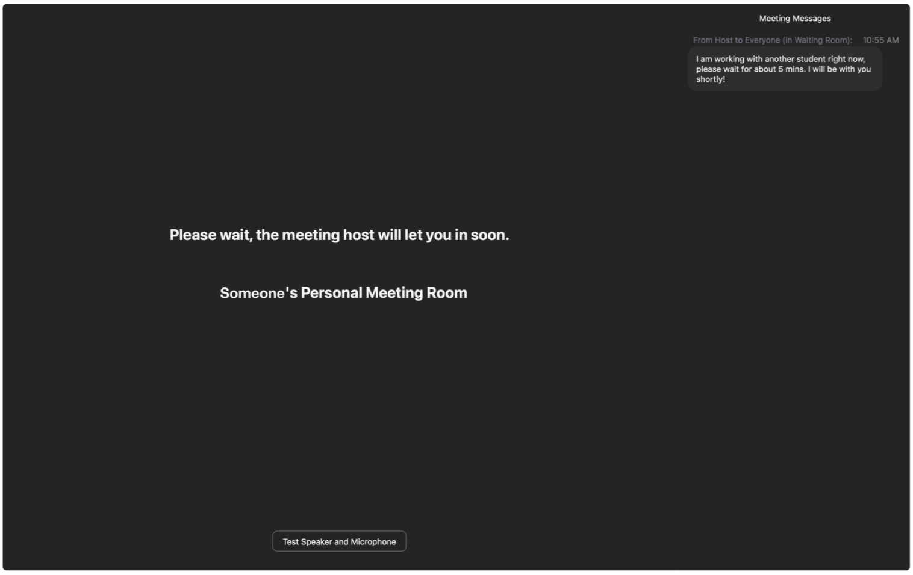
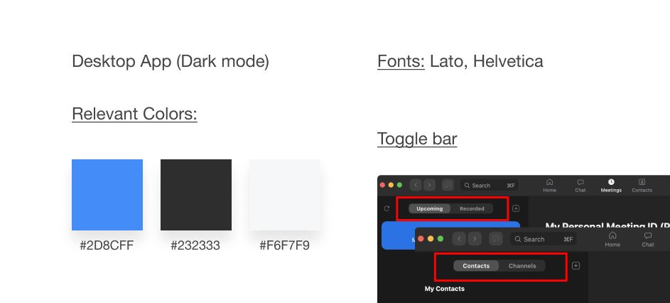
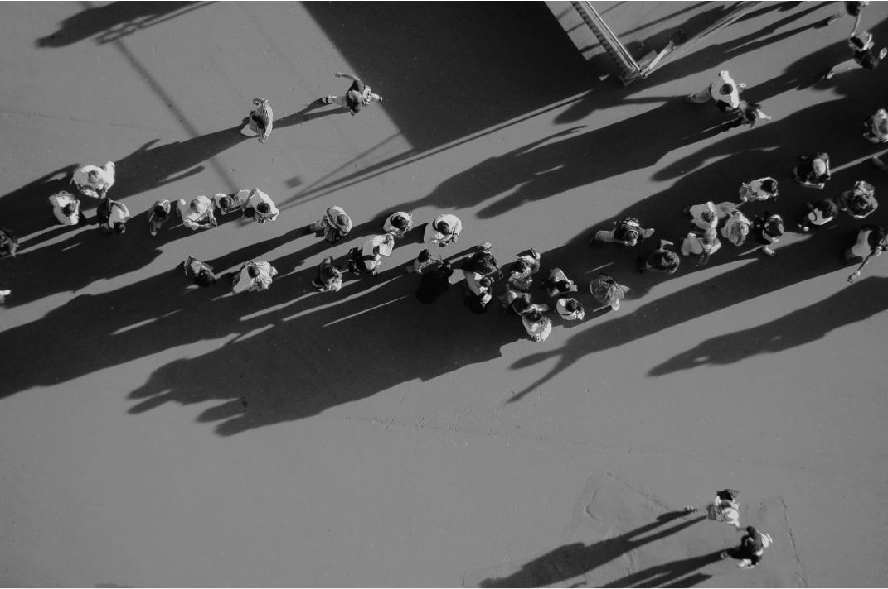
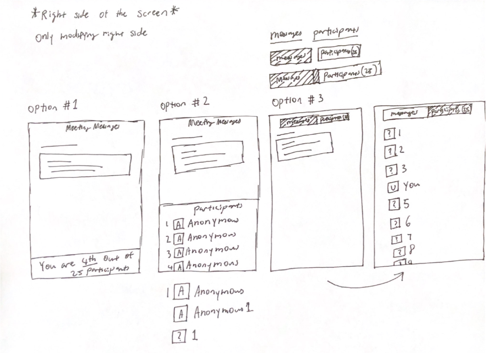

Chapters:
I solved a problem my classmates and I faced during drop-in office hours. My research enabled informed UI decisions on the redesign.
Figma, FigJam
Mar 2021 (2 Weeks)
I went to a drop-in office hour for help from a Teaching Assistant (TA). I remember being in the waiting room for a long time. Although other drop-in office hours were open, I was hesitant to leave. I convinced myself I was at the front of the line. As such, if I waited longer, I would be admitted. In the end, I wasted a lot of time.
How many people before me? How long will I have to wait? These questions are unanswered. So, I would sit in limbo for hours.
I interviewed 17 people who attended crowded drop-in office hours before. I conducted these thirty-minute conversations over text while waiting in the queue!

If a solution existed, my objective would shift to making that solution more discoverable. It’s better to take it slow than to jump to conclusions.

Among colors and fonts, toggle bars separated two functions and allowed ease of navigation. If a feature, a toggle bar would maintain consistency.
Although the room chat had its upsides, it relied heavily on the attendees’ participation, which would be inconsistent. Additionally, there were little downsides with the queue visual, assuming the hosts would be fair and always admit the user who came in first.
I examined various UI layouts to ensure the toggle bar was the best option. Additionally, since the purpose of a waiting room is to anonymize attendees, I thought about how to represent an anonymous user.
Although all were thrilled with the redesign, 2 waiting room attendees preferred having the queue UI on the host messages space so it would be more convenient to view.
However, I had thought about the idea and concluded it would be an information overload. Plus, it wouldn’t be too consistent with Zoom’s design language.
User research alone was insufficient because this project added to an existing product. As such, I analyzed the application to ensure the redesign was consistent. If I could do this project again, I would test out more queue layouts from my sketching phase through A/B testing on a larger population of attendees.
Finally, I realize this is an unsolicited redesign. So the redesign I came up with might have been a consideration. Yet for unknown reasons, it was excluded. Either way, the project has taught me a lot.